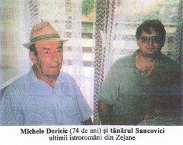
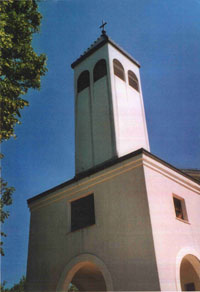

Auzisem de multă vreme de existența unei regiuni în munții Istriei despre care web-ul spune că "locuitorii vorbesc o limbă mai apropiată de română decât cea a aromânilor, dar care are totuși destule caracteristici distincte pentru a fi clasificată ca un dialect de sine stătător." Numiți de locuitorii regiunii Ciribiri și de filologi vlahi istrieni, locuitorii acestor sate sunt în același timp o remarcabilă supraviețuire lingvistică și un "puzzle istoric."
Astfel aflăm că cea mai mică cominutate care vorbește româna între diferitele țări balcanice se găsește în Croația, locuind în regiunea nord-estică a Peninsulei Istriote, fără să aibe o continuitate geografică cu regiunile locuite de aromânii din Macedonia, Albania sau Grecia.
De altfel, originea lor rămâne un subiect de controversă. Unii afirmă că această populație ar fi migrat în secolul XV sub presiunea invaziei otomane în Balcani, iar alții susțin că ar fi o rămășiță a populației valahe menționate în cronicile sârbești încă din secolul XIV.
O altă teorie globală asupra existenței întregii populații de limbă română din balcani afirmă că ar fi descendenții legiunilor romane instalate de către autoritățiile Imperiului Roman pentru a proteja Via Egnatia. Fapt cert esta că, dacă în statisticile citate de R. Sârbu, se indică un număr de vorbitori istroromâni de cca. 6.000 în 1841, ei nu mai erau decât între 2.000 și 4.000 în 1904, iar conform recensământului italian din 1921, nu mai rămâneau decât 1.644. Ba chiar după Radu Flora, în 1961 numărul lor scăzuse la numai 1.140.
și zona locuită de istroromâni s-a redus cu timpul. Dacă în trecut ea acoperea mai bine de jumătate din Istria, de la Coasta Adriatică până la est de Rijeka în Munții Gorski, iar la sud până aproape de vârful peninsulei, astăzi nu mai există decât doua zone istroromâne compacte: valea Valdarasa, cu șapte sate din care principala localitate este Sușnevița, satul Žejane în nordul muntelui Učka (numit altădată de italieni Monte Maggiore). Deși atât de redusă, această comunitate s-a luptat îndelung ca să-și păstreze tradițiile și mai ales limba.
Datorită poziției lor dificile, la limitele mereu contestate între Imperiul Habsburgic și Imperiul Otoman, istroromânii s-au adresat românilor, încercând să găsească ajutor, încă din a doua jumătate a secolului XIX. Ei au atras astfel atenția unor intelectuali precum Aron Pumnul, Gheorghe Asachi, Simion Bărnuțiu, Timotei Cipariu, etc. Așa a ajuns Ion Maiorescu, tatăl lui Titu Maiorescu, primul nord-dunărean care a vizitat regiunea în 1857, să scrie că însăși existența lor este "unu miraculu."
Ideea înființării unei școli în limba română, propunere făcută de italianul Dr. Constantini în 1888, a fost însă combătută în mod vehement de diferiți reprezentanți croați în Dieta provincială. Între alții, Dr. Laginja a afirmat chiar că acești istroromâni ar fi... slavi!
Așa cum, mai bine de o sută de ani mai târziu, autoritățile grecești afirmau în regiunile europene că aromânii sunt greci... latinizați!
Atunci a apărut cel care va fi considerat ca "Apostolul Istroromânilor" Andrei Glavina (Sușnievița 1881 - Pola 1925). Remarcat de profesorul român T. Burada care studia limba și tradițiile populațiilor din regiune, Andrei Glavina a fost invitat în România unde a studiat la Iați și la Blaj. Întors în Istria, unde a lucrat ca învățător, Glavina a publicat în 1905 prima lucrare scrisă în istroromână intitulată "Calindaru lu Rumeri din Istrie cu figure lucrat partea votea de Andreiu Glavina și Constantin Diculescu." El s-a și luptat pentru crearea unei școli românești și a militat pentru publicarea de articole despre viața istroromânilor.
După Primul Război Mondial, în plus de relațiile culturale cu România, Andrei Glavina a deschis, în satul lui natal, prima școală de limbă românească, care purtă numele de "Împăratul Traian" și care a numărat la apogeul ei 443 elevi. Din păcate moartea lui Glavina sună sfârșitul acestui episod fericit.
În timpul celui de-al Doilea Război Mondial, istroromânii nu au susținut extinderea ocupației italiene care includea aproape jumătate din Slovenia și o parte din Croația. Satul Žejane a fost ocupat de armata germano-italiană pe 5 mai 1944, care a ars 102 ferme și 90 de case.
După război, odată cu instaurarea regimului comunist în Iugoslavia, timp de aproape cincizeci de ani, nici o informație asupra vieții istroromânilor n-a depășit limitele regiunii.
Deși Republica Croată independentă, care a fost proclamată pe 25 iunie 1991, recunoaște "membrii ale altor națiuni și minorități care sunt cetățenii ei: sârbi, musulmani, sloveni, cehi, slovaci, italieni, unguri, evrei și alții," istroromânii nu sunt menționați, nu au școli, radio sau televiziune.
Totuși, diferite activități au avut loc în ultimii ani, între care "Primul simpozion dedicat istroromânilor" la Pola în 30 martie - 1 aprilie 2000 și cearea la Triest în 1994 a "Asociației Istroromâne Andrei Glavina."
Din 1995, au văzut lumina tiparului diferite cărți și studii în istroromână și începând din 1996 a demarat publicarea revistei "Scrisore către frați Rumer."
Cu toate aceste informații adunate din ziare și reviste mă îndreptam spre satul Žejane, unde speram să întâlnesc locuitori cu care să încerc să vorbesc românește. Eram foarte emoționat pentru că aveam sentimentul de a face un salt de câteva secole în istorie. Ca și cum ai afla că undeva, într-un colț ascuns al pământului trăiesc niște ființe care au cunoscut dinozaurii. De fapt, mai trăisem o astfel de experiență, între altele când am vizitat în Siria un sat în care se vorbește arameana, limbă care o vorbea Isus. Dar de data asta speram să pot vorbi și să ne înțelegem fără traducător.
Într-adevăr, în stația de autobuz aud doi locuitori care-și spuneau: "Bură zi, ce faci?," "Bire."
 Doričić Michel are 74 de ani și e născut la Žejane. De fapt satul se chiamă Jeiăn în istroromână sau Seiane în italiană. Numele vine de la muntele Seja, care se găsește în apropiere. După cum spune tradiția din moși-strămoși, locuitori ar fi venit de mult (poate 600 ani, poate 300!) din sud, dinspre Macedonia, ca să scape de asuprirea otomană. La început s-au ascuns în vârful muntelui, dar clima era prea rece și au coborât în locul unde sunt astăzi. De fapt, nu erau decât șase familii. De aceea în sat nu sunt decât șase nume de familie: Doričić, Sanković, Turković, Marmilić, Istanbulić și Ciceran.
La început, locuitorii din Žejane se ocupau cu creșterea vitelor și a oilor, pe urmă, profitând de pădurile înconjurătoare, au început să producă mangal și să-l vândă la oraș. Ei plecau din sat la cinci dimineața spre Rijeka, duceau în spinare, sau cu șarete, mangalul la târg și, după ce îl vindeau, se întorceau în sat înainte de apusul soarelui. Cu timpul au trecut și la agricultură. Deși știau că erau alți locuitori care vorbeau limba lor dincolo de munte n-au avut deloc legături cu ei. Michel vorbește în plus de istroromână, croata și italiana. Pentru că la școală se învăța totul în italiană în vremea copilăriei lui.
În 1943, când avea numai șaptesprezece ani, a fost făcut prizonier de către nemți, care l-au prins în munți unde era partizan, și l-au deportat într-un lagăr de muncă în Austria, la Villach. Acolo a stat doi ani și a asistat la bombardamentele americane care vizau distrugerea gării, cel mai important nod de cale ferată din sudul Austriei. Între timp a lucrat la o fabrică de cărămizi.
După ce s-a întors la Žejane a lucrat timp de 37 de ani ca șofer pe camion, ba chiar și pe autobuzul care face cursa Rijeka-Mune și care trece prin Žejane. Acum este la pensie, dar tot mai lucrează benevol cinci ore pe zi, cutreierând cu jeep-ul munții înconjurători pentru a da alerta în caz de incendiu.
 Biserica din sat, cu hramul Sf. Andrei, a fost arsă -"srusită"- de nemți în 1944, dar locuitorii au refăcut-o în 1960. Acum nu mai este preot la Žejane, ci vine pentru slujbă de la Mune. Și numărul caselor s-a împuținat. Când era copil erau mai bine de o sută, acum sunt doar vreo 37 și numai 200 locuitori. Cei doi fii au plecat, unul la Lovran, altul la Mune. Ei nu mai vorbesc decât "un pic românesta." Alți locuitori au plecat și mai departe, unii în Franța, câțiva în Statele Unite.
Așa este viața astăzi!
Când am plecat din Žejane, am fost acompaniat de un tânăr din sat, care a ținut să mă conducă înapoi la Rijeka și mi-a oferit în amintire caseta înregistrată de orchestra satului în "dialect local" - după cum spune prezentarea în croată. Dar mai întâi mi-a arătat foarte mândru dicționarul istroromân-croat pe care-l avea în casă. Din păcate cred că nu-i folosea prea mult pentru că în istroromână nu știa decât cuvintele cântecelor de pe casetă.
Adrian Rozei
May 1, 2002
© 2002 Dorul